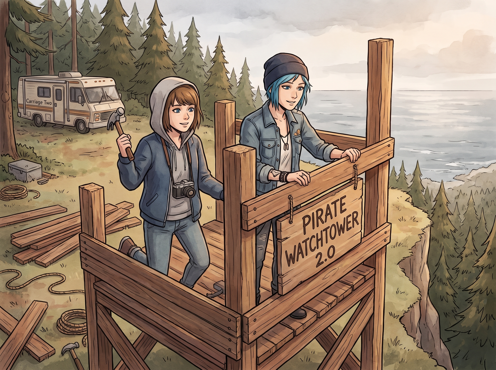

創傷覆寫

對於 Max 和 Chloe 來說，阿卡迪亞灣後院那座未完成的海盜樹屋，絕對不只是一個遺憾，它是兩人心中最深層的創傷觸發點，是童年與青春期碎裂的具象化紀念碑。
它停工的那一天，正是 William 車禍去世的日子。隨後，Max 離開了西雅圖，留下了 Chloe 一個人面對無盡的悲傷與繼父的暴力。那座在雨中漸漸腐爛的半成品木屋，對 Chloe 而言象徵著被拋棄與死亡，對 Max 而言則象徵著逃避與背叛的罪惡感。
因此，當她們在二號車廂外的懸崖松林裡，決定重啟這個「2.0 重工業級海盜瞭望塔」的計劃時，這絕不是一場單純的懷舊遊戲，而是一場極度硬核的暴露療法與創傷覆寫。
一、敲下第一根釘子的陣痛期
工程剛開始的時候，情況遠沒有想像中那麼浪漫，甚至充滿了心理崩潰的邊緣試探。
當 Chloe 第一次開著皮卡運來木材，並把一把嶄新的羊角錘遞給 Max 時，Max 的手抖得幾乎拿不住錘子。那種熟悉的木屑味，瞬間把她拉回了十三歲那年得知 William 死訊的下午。她甚至會因為 Chloe 在樹上喊了一句「Max，把木板遞給我」而陷入短暫的恐慌發作，彷彿下一秒 Chloe 就會像當年的蝴蝶一樣在她眼前死去。
而 Chloe 同樣在掙扎。每當她拿起電鋸，腦海裡總會閃過父親當年笑著給她畫樹屋圖紙的畫面。有好幾次，Chloe 會突然放下工具，一個人走到懸崖邊狂抽煙，眼神空洞得可怕。
這是一個巨大的情感雷區，但她們誰也沒有喊停。因為她們都知道，如果不把這塊腐爛的傷疤挖出來重新縫合，她們永遠會被困在十三歲。
二、創傷覆寫：用成年人的力量奪回領地
拯救她們的，是這座 2.0 瞭望塔的非還原性。
她們沒有試圖去複製當年那座脆弱的、小孩玩鬧般的木屋，而是用成年人的技能與力量，徹底重構了它。
Chloe 用鋼槽、膨脹螺絲和氬弧焊，給這座塔打下了足以抗擊十七級颶風的根基。這對 Chloe 來說是一種心理補償——當年那個失去父親、無力保護自己的小女孩，現在已經成為了一個能用雙手重塑鋼鐵、保護伴侶的強悍機械師。
Max 不再是那個遇到變故就逃避去西雅圖的懦弱女孩。這一次，無論錘子砸破了手指，還是海風吹得她發燒，她都死死咬著牙，陪 Chloe 釘完了每一塊木板。當她把太陽能板的電線接通，讓瞭望塔亮起第一盞燈時，Max 終於在心裡原諒了當年那個不告而別的自己。
這不再是那個等著爸爸回家完成的悲傷遺跡，而是兩個倖存者用滿手老繭和傷痕，親手建立的末日堡壘。
三、名媛與天使的外部心理干預
在這場漫長且痛苦的脫敏治療中，二號車廂的另外兩位成員，展現了極其微妙且強大的治癒力。
Victoria 表面上對這個違章建築嗤之以鼻，天天威脅要打電話給環保局舉報她們破壞海岸線風貌。但當瞭望塔建好的那個冬天，Chloe 和 Max 發現，塔裡的硬木長椅上，莫名其妙地多出了兩條價值不菲的純羊絨防水毛毯，以及幾個符合人體工學的定製靠枕。名媛用這種極度傲嬌的方式，默許了這個創傷庇護所的存在。
而 Kate 則是她們的情緒安全網。每當兩人在塔上因為回憶起沉重往事而陷入沉默時，Kate 總會如同掐準了時間一般，端著兩杯熱騰騰的肉桂蘋果酒出現在塔下，用她溫柔的聲音喊道：「海盜們，你們的補給物資到了哦，需要我用滑輪吊籃送上去嗎？」
四、懸崖邊的和解
現在的 2.0 海盜瞭望塔，已經成為了二號車廂最神聖的領地。
在那些睡不著的深夜，Chloe 和 Max 會爬上塔頂。她們不再需要用時光倒流去改變什麼，只是肩並肩坐著，喝著啤酒，看著普吉特海灣的星空。藍牙音箱裡放著懷舊的獨立民謠，海風吹過鋼結構發出低沉的嗡鳴。
這座塔證明了一件事：William 確實沒有回來，阿卡迪亞灣也永遠成為了過去，但十三歲時被按下的那個暫停鍵，終於在這一刻被她們自己狠狠地按下了繼續播放。